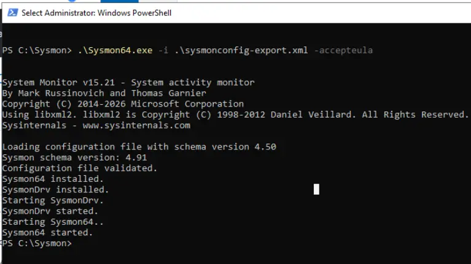
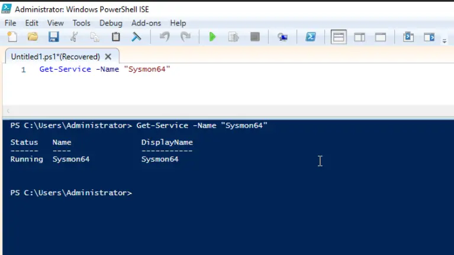
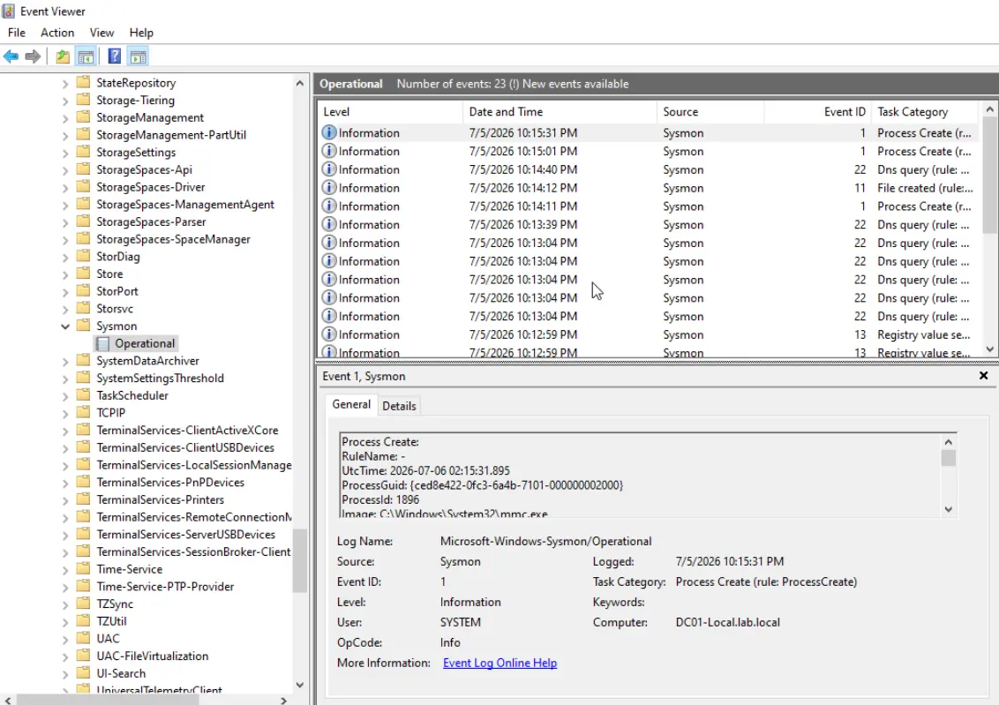
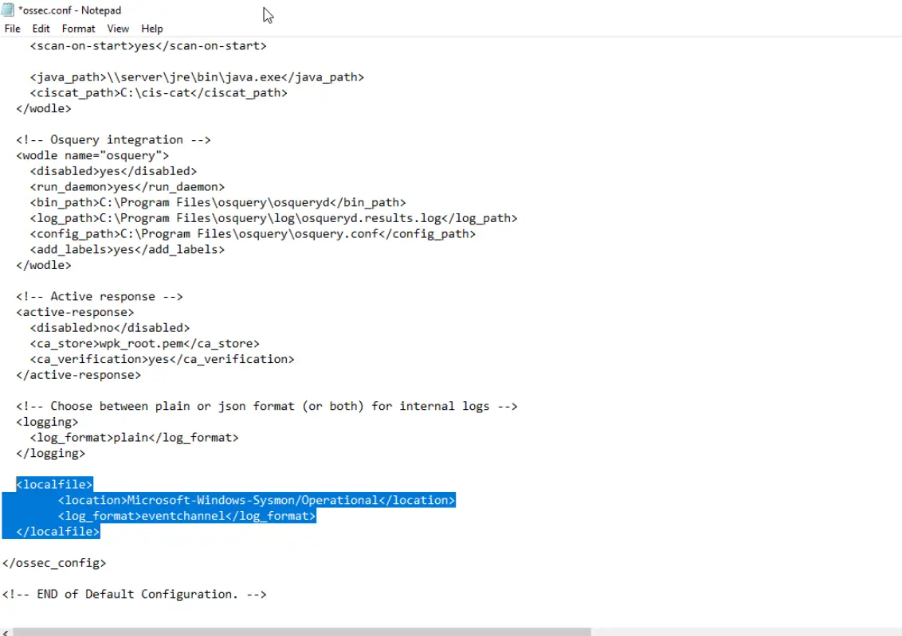
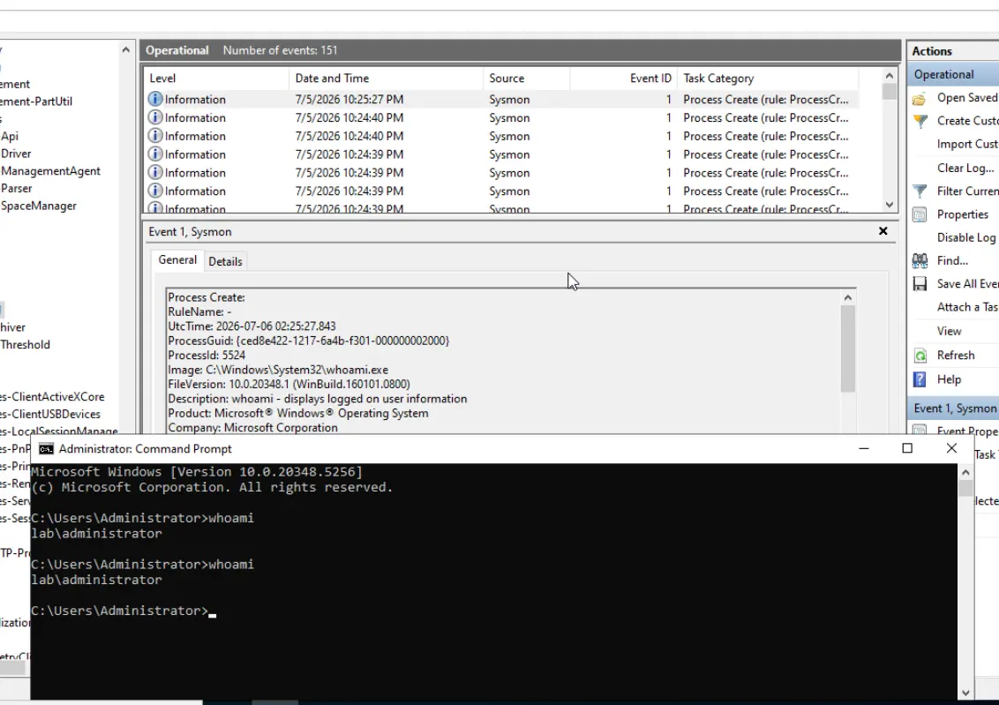
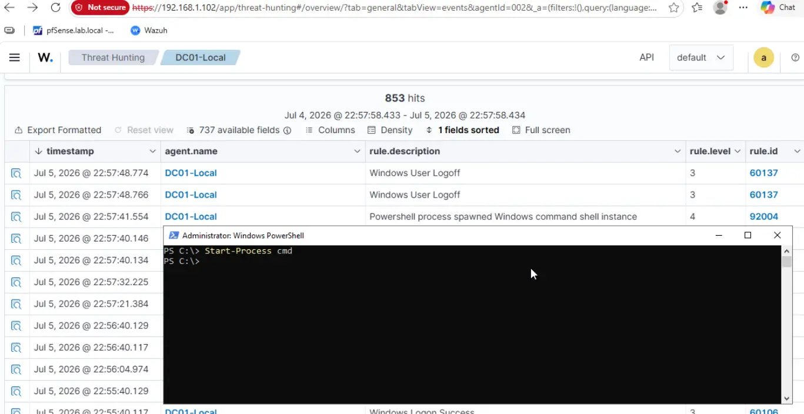
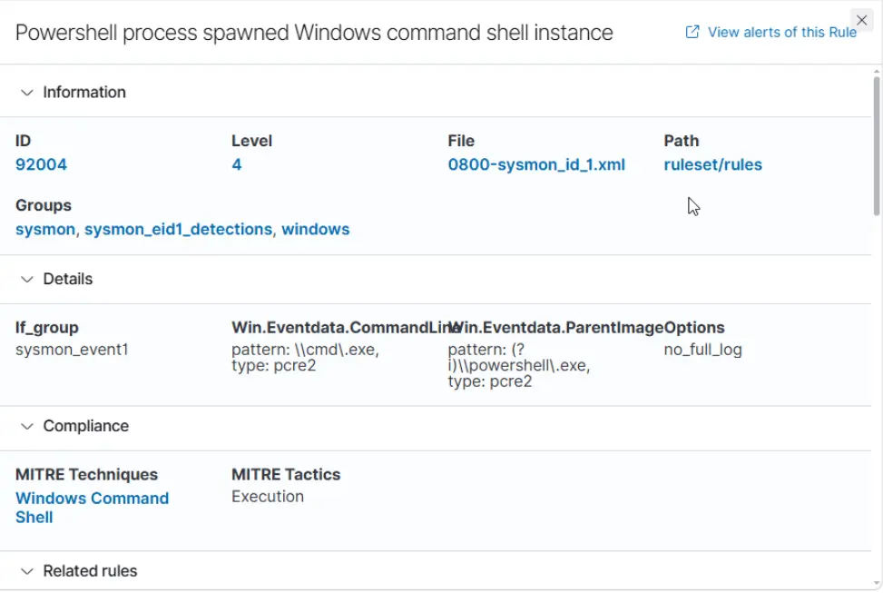

Detect Active Directory Attacks with Wazuh & Sysmon
Learn how to integrate Sysmon telemetry with Wazuh to detect and investigate Active Directory attacks. This guide covers Sysmon deployment, agent configuration, and real-time threat detection across your AD infrastructure.
Prerequisites
Before deploying Sysmon and integrating with Wazuh, ensure:
- Wazuh Manager: A running Wazuh deployment (on-premises or cloud)
- Windows Endpoints: Windows 10/11 or Windows Server machines joined to Active Directory
- Wazuh Agent: The Wazuh agent must be installed and running on target Windows systems
- Admin Rights: Administrator or equivalent privileges on Windows systems for Sysmon installation
- Internet Access: Required to download Sysmon and configuration files
Preparation: Download Required Tools
1. Download Sysmon
Sysmon is a Windows system service and device driver that monitors system activity and logs it to the Windows event log. Download the latest version from Microsoft Sysinternals:
- Sysinternals Sysmon Download
- Extract
Sysmon64.exe(orSysmon.exefor 32-bit systems)
2. Download Sysmon Configuration
A well-crafted Sysmon configuration file is essential for comprehensive monitoring. Use the community-maintained SwiftOnSecurity configuration:
- SwiftOnSecurity Sysmon-Modular Configuration
- Download the
sysmonconfig.xmlfile
3. Organize Files
Create a directory and place both files together for easy installation:
C:\Sysmon\
├── Sysmon64.exe
└── sysmonconfig.xmlInstallation: Deploy Sysmon
Step 1: Open PowerShell as Administrator
Right-click PowerShell and select "Run as Administrator", then navigate to your Sysmon directory:
cd C:\SysmonStep 2: Install Sysmon with Configuration
Execute the following command to install Sysmon as a Windows service with the security-focused configuration:
.\Sysmon64.exe -i .\sysmonconfig.xml -accepteulaWhat this command does:
-i: Install Sysmon as a Windows service.\sysmonconfig.xml: Apply the SwiftOnSecurity configuration profile-accepteula: Automatically accept the Sysinternals EULA

Sysmon installation command executed successfully
Verification: Confirm Sysmon is Running
Check the Sysmon Service
Verify that Sysmon has been installed as a Windows service:
Get-Service -Name "Sysmon64"You should see output indicating the service is running:
Status Name DisplayName
------ ---- -----------
Running Sysmon64 System MonitorCheck Event Viewer for Sysmon Logs
Navigate to Event Viewer and verify that Sysmon is logging activity:
- Open Event Viewer (eventvwr.msc)
- Navigate to: Applications and Services Logs > Microsoft > Windows > Sysmon > Operational
- Confirm you see event logs with IDs like Event 1 (Process creation), Event 3 (Network connection), etc.

Sysmon events captured in Event Viewer's Operational channel

Detailed process creation and system events from Sysmon
Wazuh Agent Configuration
Configure Wazuh to Ingest Sysmon Logs
To collect Sysmon logs, you need to configure the Wazuh agent to monitor the Sysmon operational event log channel.
Step 1: Locate the Wazuh Configuration File
Open the Wazuh agent configuration file:
C:\ProgramData\ossec\ossec.confStep 2: Add Sysmon Localfile Configuration
Add the following configuration block to monitor the Microsoft-Windows-Sysmon/Operational channel. Insert this within the <ossec_config> tags:
<localfile>
<location>Microsoft-Windows-Sysmon/Operational</location>
<log_format>eventchannel</log_format>
</localfile>What this configuration does:
<location>: Specifies the Windows event log channel to monitor<log_format>: Tells Wazuh this is an event channel (not a traditional text log)

Wazuh agent ossec.conf file updated with Sysmon monitoring
Step 3: Restart the Wazuh Service
Restart the Wazuh agent service to apply the configuration changes:
Restart-Service -Name "Wazuh"Or manually restart via Services:
- Open Services.msc
- Find Wazuh in the list
- Right-click and select Restart
Testing: Generate Sysmon Activity
Create Observable Process Activity
Now let's generate some activity for Sysmon to capture and Wazuh to ingest. Open PowerShell and run commands that will be logged:

Executing PowerShell commands that trigger Sysmon event logging
Trigger a Process Creation Event
Execute this command to spawn a cmd.exe process, which will be captured by Sysmon as Event ID 1 (Process Creation):
Start-Process cmdThis simple command will create observable telemetry that Sysmon logs and Wazuh can ingest.
Verification: Wazuh Ingesting Sysmon Logs
Check the Wazuh Manager to confirm it's receiving and processing Sysmon logs from your endpoint.

Wazuh dashboard displaying process creation events from Sysmon

Detailed breakdown of a Sysmon Event ID 1 (Process Creation) in Wazuh
What's Next: Building Detection Rules
Now that Sysmon is integrated with Wazuh, you can build powerful detection rules for:
- Active Directory Attacks: Detect AD enumeration, credential dumping, lateral movement
- Process Injection: Identify suspicious process hollowing and injection techniques
- Privilege Escalation: Monitor for UAC bypasses and privilege escalation attempts
- Living-off-the-Land Attacks: Detect abuse of built-in Windows tools (LOLBins)
- Network Reconnaissance: Monitor DNS queries, port scans, and lateral connection attempts
Pro Tips
- Performance Impact: Sysmon and Wazuh agent are lightweight, but monitor system performance on resource-constrained VMs
- Configuration Tuning: The SwiftOnSecurity configuration is comprehensive. Fine-tune it based on your homelab needs
- Retention Policy: Configure log retention on your Wazuh manager to avoid disk space issues
- Alert Tuning: Start with broad detection rules and refine them to reduce false positives
- Testing Environment: Use a test machine to validate detection rules before deploying to production